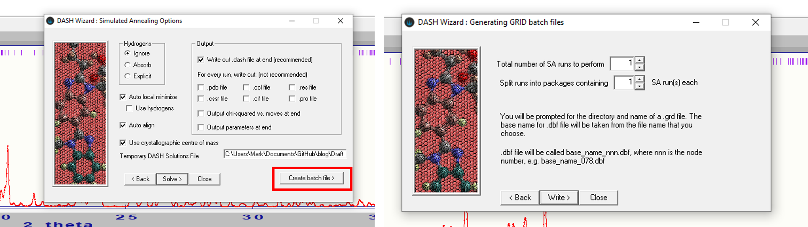

Introduction
In my previous post, I went over the rationale behind GALLOP and some details about the algorithm.
In this post, I’ll go over how to use GALLOP to solve the crystal structure of verapamil hydrochloride, a calcium channel blocker used in the treatment of arryhythmias. If you want to have a go yourself, you can download the diffraction data in xye format here or my complete set of fit files in a zip archive here. If you don’t have access to DASH, I recommend downloading the full set of fit files so you have access to the Z-matrices which may otherwise be tedious to generate by hand.
Whilst not relevant for verapamil hydrochloride which crystallises in \(P\bar{1}\), note that currently GALLOP requires the space group to be in the standard setting so if you have a known unit cell in a particular non-standard space group, you should transform it to the standard setting before fitting your diffraction data for GALLOP.
Fitting PXRD data
Fitting data with DASH
Follow the procedure laid out in the DASH user guide tutorial section [pdf] to fit the diffraction data. You should also use DASH to generate your Z-matrices if you do not have them already. To do this, you will need a 3D molecular representation of verapamil hydrochloride which can be read in by DASH and converted to a Z-matrix (ZM). If you don’t want to generate one yourself, I recommend using the CSD reference code CURHOM as the basis for your ZMs.
Once the Pawley refinement has finished, save the files as normal, and ensure you have access to the resultant .sdi, .dsl, .hcv, .pik and .tic files. If you do not want to include Mogul Distribution Bias to bias the starting points for the torsion angles, and you already have ZMs available, you can close DASH at this stage.
If you wish to make use of MDB information and/or need to generate ZMs, continue on through the wizard to the settings for solving the structure with simulated annealing. Read in your molecule file to generate ZMs if required. If you wish to use MDB in your SDPD attempt, follow the instructions in section 10.3.4 in the DASH user guide (linked above). You will then need to generate a single DASH batch file using the Create batch file option highlighted in the figure below:

The resultant .dbf file should be made available along with the Pawley fit files produced earlier and ZMs ready for use in GALLOP.
Fitting data with GSAS-II
As mentioned in the introduction, I recommend having the DASH produced Z-matrices (ZMs) available to save time generating one in the correct format from scratch. Eventually, I’d like to include the ability to generate ZMs natively in GALLOP, but that’s a few updates down the line at the moment!
For a reference of the format expected if you do want to have a go at making your own, please see here for an overview.
The GSAS-II tutorials should be used as a guide for how to proceed with indexing data and subsequent Pawley refinement - follow to end of Step 2
GSAS-II by default uses the Analytic Hessian optimisation method. According to the documentation: “It uses a custom-developed least-squares minimizer that uses singular-value decomposition (SVD) to reduce the errors caused by correlated variables and the Levenberg-Marquardt algorithm to up-weight diagonal Hessian terms when refinements fail to lower \(\chi^{2}\)”. The alterations to the Pawley covariance matrix this introduces causes errors when used in GALLOP (for example, the covariance matrix cannot be inverted or the inverse covariance matrix is not positive-definite, resulting in the potential for negative values of \(\chi^2\)). To fix this issue, I suggest the following procedure:
- Pawley fit the data as directed in the GSAS-II Tutorials - the analytic Hessian method can be used for this.
- One happy with the fit, set all refined parameters apart from peak intensities (e.g. peak shape, background etc) as unrefineable.
- See figure below: i. Reset all intensities using Pawley create, ii. The intensities will be set back to 100, but not flagged for refinement. iii. Set all intensities to refine (highlight column by clicking the refine column heading, then press Y on your keyboard), iii. Go to Controls and select Analytic Jacobian from the drop-down menu.
- Refine
- Once refinement is complete, save the project file, and ensure that the .gpx GSAS-II project file and the ZMs are available for use in GALLOP.

Solving structures with the browser interface
Below is a video (direct link) showing the browser interface being used to solve the structure of CT-DMF2, which has 42 degrees of freedom:
The video covers a few of the main features we’ll be looking at.
If you have installed GALLOP locally, then to open the program interface, open a command prompt and type the following commands:
C:\Users\Username> conda activate gallop
(gallop) C:\Users\Username> gallopYour web browser will automatically open and the following interface should appear:

If you are running GALLOP on a cloud environment, then follow the general procedure laid out in the notebooks linked here.
I will write another blog post in the future showing how to deploy GALLOP on the Google Compute Engine cloud environment.
Once GALLOP is running, we will be using the following steps to solve the crystal structure of verapamil hydrochloride: 1. Upload files 2. Modify GALLOP parameters 3. Solve the structure 4. Download solutions and close GALLOP
1. Upload files
The radio button in the above screen shot already has “Upload files” selected, which then has an additional context menu to choose the Pawley refinement program you have used.
Select the program you used to fit the diffraction data, and then either drag and drop your DASH or GSAS-II fit files and Z-matrices (ZMs) onto the uploader widget, or select “Browse files” and navigate to the folder containing your fit files and ZMs and select them all for upload. If you wish to use MDB to bias the initial torsion angles used in GALLOP, you should also upload the .dbf file produce earlier. Note that this will only be used to set the MDB torsion angle biasing, and none of the other settings included in the MDB will be used by GALLOP.
You should end up with something that looks like this:

2. Modify GALLOP parameters
With only 23 degrees of freedom, verapamil hydrochloride is a relatively simple crystal structure for GALLOP and the default settings should be sufficient to solve it. However, we will make a small change to increase our chance of success.
Click on the Particle Swarm menu in the side bar to expand it. We will then increase the number of swarms from 10 to 20 either by using the + symbol to increment the number, or by deleting the 10 and typing in 20:

We should also decrease the number of iterations GALLOP will do - 10 should be sufficient. Open the General menu in the side bar, and change the Total number of iterations per run to 10.

Once we’ve done this, then we should be ready to solve the structure.
3. Solve the structure
Once you are happy that all the files needed have been uploaded, and you are satisified with the settings for GALLOP to use, press the Solve button. Note that from this point forward, changing any of the settings whilst GALLOP is running will stop the run. You can still open the expandable menus to view settings or extra information provided by GALLOP.
A number of expandable data menus will appear, and a progress bar will appear that tracks the progress of the learning rate finder discussed in my previous post. Once this has finished, the main GALLOP iterations will begin, with their own progress bar to track their progress. Once the first iteration has finished, some additional items will appear on screen. Two expandable boxes (discussed below) will appear, followed by a download link with the text “CIFs for run 1”. Lastly, a table of results for each iteration is displayed, as is an interactive figure showing the \(\chi^2\) value found by each of the particles in each of the swarms. You can use your scroll wheel to zoom in, and click to drag to explore this plot without interrupting GALLOP.

The Show structure expandable item allows you to view an interactive plot of the structure found during the last iteration. Click and drag to rotate, and use your scroll wheel to zoom in and out. This figure will automatically update after each iteration, and plots the best structure found during the last iteration - note that this is not necessarily the best structure found so far.

If you are using DASH for Pawley fitting, the Show profile expandable item will also be visible. This allows you to see the fit to the diffraction data obtained in the last iteration.

For the data fit files I have provided, a solution has \(\chi^{2}_{int}\) < 60. If you fitted your own data, this will differ.
4. Download solutions and close GALLOP
You can download CIFs at any time using the link. If you wish to stop GALLOP at any point, you can press the Stop button that appears in the top right corner of the browser window when GALLOP is running.
The link will give you a zip archive containing a CIF of the best solution found after each iteration, and a .json file which gives details of the settings used for the GALLOP run.
Once you are finished, you can safely close the browser window. If running on your local machine, you can then close down the command line window you opened earlier. If running on a cloud notebook, you may wish to shut down the notebook (if using Colab or Kaggle) to conserve your useage quota, or if using a paid service, you may wish to shut down your VM in order to reduce costs.
Conclusions
We’ve covered the general process of how to use GALLOP to solve crystal structures. There are many more settings that can be adjusted to tweak how GALLOP runs. I encourage you to have a poke about the side-bar menus to see if anything jumps out at you. In future blog posts, I’ll highlight some of the advanced settings that can be used, which can provide performance improvements for certain types of crystal structure.
In my next post, I will cover how to use the Python API to solve crystal structures. Whilst this requires a bit of Python knowledge, it gives more flexibility than the browser interface and can be used to do some cool stuff!